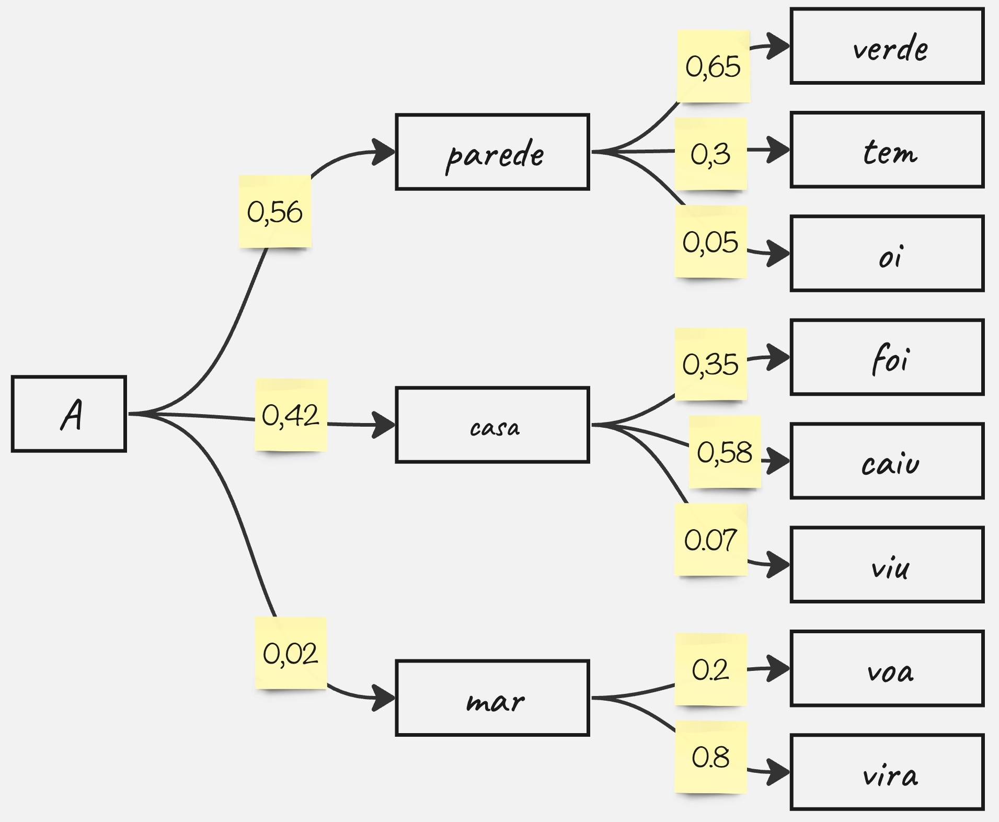

Processamento de Linguagem Natural
Modelos de Linguagem
Edital Nº 027/2026
Yuri Cossich Lavinas
Maître de Conférences - professor (adjunto/associado/sem HDR) · IRIT/Université Toulouse Capitole, França
Modelo?
- Um modelo é uma simplificação de um fenômeno complexo
- Em linguagem natural (humana: texto):
- Representa padrões léxicos, sintáticos e semânticos
- Prediz palavras a partir do contexto
- Gerar texto automaticamente
- Capturar padrões linguísticos
Base de chatbots e LLMs modernos

Como escolhar a próxima palavra?
Qual sequência você escolheria?
Modelos de Linguagem Probabilísticos
- Assume uma probabilidade associada à existência de uma sequência de palavras \(p_{1:i}\)
- Usando a regra da cadeia da probabilidade: \( \begin{aligned} P(p_{1:i}) = {} & P(p_1)P(p_2 | p_1)P(p_3 | p_{1:2}) \dots P(p_i | p_{1:i-1})\end{aligned} \)
- Problemas?
- Multiplicações de valores pequenos podem zerar o resultado \(\begin{aligned} \log P(p_{1:i}) = {} & \\ & \log P(p_1) + \log P(p_2 | p_1) + \log P(p_3 | p_{1:2}) + \\ & + \dots + \log P(p_i | p_{1:i-1}) \end{aligned} \tag{1.2}\)
- Probabilidade condicional - completar uma frase com uma palavra dado que outras palavras vieram antes: \(P(p_i | p_1, \dots, p_{i-1})\tag{1.3}\)
\( P(palavra|Vamos, completar, o, texto, com, a, próxima)\)
Maldição da dimensionalidade
- Modelar a distribuição conjunta de 10 palavras com um vocabulário de 380.000 palavras
(https://www.academia.org.br/nossa-lingua/vocabulario-ortografico)
gera 380.000 \(^{10}-1\) parâmetros = \(627,821,185^{55} - 1\) - Suposição de Markov para simplificar problema computacional:
apenas o passado mais recente é importante para o futuro
\(P(p_i|p_{1..i-1}) \approx P(p_i|p_{i-1})\) - Unigrama → 1 palavra: \( P(palavra|próxima) \)
- Bigrama → 2 palavras: \( P(palavra|a,próxima) \)
- Trigrama → 3 palavras: \( P(palavra|com,a,próxima) \)
- n - grama
- Dependências longas:
- mais fácil de predizer
- mais rara será a sua aparição no corpora
- em geral n é no máximo 5
Estimando as probabilidades a partir de corpora
- Utilizar um conjunto de textos:
- quanto maior e mais diverso - mais chance de conter muitas sequências diferentes
- e mais demorado é o processamento
- Estimar a probabilidade: contar palavras.
Para um bigrama: - onde \( c(p_{i-1}) \): quantas vezes \(p_{i-1}\) aparece antes de \(p_i\)
- onde \( c(p_{i}) \) : quantas vezes \(p_{i-1}\) aparece no texto
- Para um 3-grama: \(P(p_i | p_{i-1}, p_{i-2}) = \frac{c(p_{i-2}, p_{i-1}, p_i)}{c(p_{i-2}, p_{i-1})}\)
Exercício 1 — Probabilidade unigrama
Corpus: "o gato dorme o gato come o rato"
- Conte, \(C(p)\), as ocorrências de cada palavra/token.
- Calcule a probabilidade \(P(p) = C(p) / T\), onde T = total de tokens.
- Qual é P("gato") no corpus?
| Token | C(p) | P(p) |
|---|---|---|
| o | 3 | 3/8 = 0,375 |
| gato | 2 | 2/8 = 0,250 |
| dorme | 1 | 1/8 = 0,125 |
| come | 1 | 1/8 = 0,125 |
| rato | 1 | 1/8 = 0,125 |
Estimar sequências maiores
- Ao utilizar n-gramas
- Dependem de sequências vistas no treinamento
- Têm dificuldade com frases novas
- Redes neurais aprendem uma função que estima probabilidades da linguagem
- Aprendizado de padrões complexos e palavras fora do corpus
- Aprendem padrões automaticamente
- Substituir contagem por aprendizado
- Generalizam melhor
- Podem prever sequências novas
- Utiliza embeddings - podem ser dinâmicos
Rede Neural para modelos de linguagem
Usar função exponencial normalizada (softmax) para estimar probabilidades: \[ \sigma(\mathbf{z})_j = \frac{e^{z_j}}{\sum_{k=1}^{K} e^{z_k}}, \quad j = 1, \ldots, K \]

Embeddings
- Construir um vetor denso para cada palavra, dado um contexto
- Pode ser diferentes para um mesmo token: "manga"
- Semântica de token próximas, vetores no espaço vetorial próximos.

Embeddings - word2vec

- Passar por cada posição \(t\), com a palavra central \(w_t\) e palavras de contexto \(w_{t_{+1:m}}\) e \(w_{t_{-1:m}}\)
- Calcular a similaridade dos vetores de \(w_t\) e \(w_{t_{+1:m}}\) e \(w_{t_{-1:m}}\) para estimar a probabilidade de \(w_{t_{+1:m}}\) dado \(w_t\)
- Calcular a função: negativo da log-verossimilhança média,
onde \(m\): tamanho da janela de contexto e \(T\): total de tokens do corpus:\[\mathcal{J(\theta)} = -\frac{1}{T}\sum_{i=1}^{T} \sum_{\substack{-m \leq j \leq m \\ j \neq 0 }}^{T} \log P(w_{t+j} \mid w_t; \theta) \]
Vetores de palavras - treinamento

- Ajustar gradualmente os parâmetros para minimizar a função
- Otimizar esses parâmetros seguindo o gradiente
- Calcular todos os gradientes vetoriais
- O gradiente descendente é um algoritmo para minimizar \((\mathcal{J}, \theta)\):
- Ideia: para o valor atual de \(\ \theta\), calcular o gradiente de \((\mathcal{J}, \theta)\) e, em seguida, dar um pequeno passo na direção do gradiente negativo.
- Repetir.
Redes Neurais Recorrentes (RNN)
- Podem processar sequências de qualquer comprimento
- A computação no passo \(t\) pode, em teoria, usar informação de muitos passos anteriores
- O tamanho do modelo não aumenta com tamanho da entrada

Treinando um Modelo de Linguagem com RNN
- Obter um grande corpus de texto — sequência de palavras x(1), …, x(T)
- Para cada sentença (ou uma sequência: mini-batch):
- Alimentar a RNN e computar a distribuição de saída ŷ(t) para cada passo t
- Ou seja: prever a distribuição de probabilidade de cada palavra, dado o contexto anterior
- Calcular a entropia cruzada média entre a palabvra prevista \(\hat{y}\) e a próxima palavra verdadeira \(x_{t+1}\): \( J(\theta) = \frac{1}{T} \sum_{t=1}^{T} J^{(t)}(\theta) = \frac{1}{T} \sum_{t=1}^{T} - \log \hat{y}^{(t)}_{x_{t+1}} \)

Geração de texto com RNN
- Assim como em um modelo de linguagem n-grama, uma RNN pode ser usada para gerar texto por amostragem repetida.
- A saída gerada em um passo é usada como entrada no próximo passo.
- Esse processo se repete sequencialmente, construindo o texto palavra por palavra.

Tradução de texto
- 2016: Google Translate usa tradução por redes neurais
- Modelo sequence-to-sequence (seq2seq): arquitetura Encoder-Decoder
- Encoder RNN: modelo que representa a sentença de entrada
- Vetor de contexto: representa toda a sentença de origem
- Decoder RNN: é outro modelo de conectada à saída do encoder
- Gera a sentença de saída passo a passo

Generative Pre-trained Transformer (GPT)
- Os GPTs fazem parte da família dos LLMs (Large Language Models)
- Eles se baseiam em transformers pré-treinados em conjuntos de dados gigantescos
- O princípio consiste em gerar a próxima palavra em uma sequência, estimando a distribuição das possíveis palavras seguintes
- A próxima palavra é escolhida por amostragem dessa distribuição
- O mecanismo de atenção é o elemento determinante dos transformers
Atenção
- Scores de atenção:
- produto escalar para calcular os scores de atenção
- softmax para transformar os scores em uma distribuição de probabilidade
- Saída da atenção: contém informações dos estados ocultos que receberam maior atenção.
- Uso no decoder: concatenar a saída da atenção com a saída própria


Transformers
- O decodificador (decoder) é uma pilha de blocos
- Cada bloco consiste em:
- Embeddings
- Atenção
- Soma e normalização
- Feed-forward
- linear e softmax
- O encoder é similar ao decodificador
- Sem a máscara de atenção
Perguntas para discussão
Como humanos conseguem prever palavras?
Um modelo “entende” linguagem?
- Chris Manning, CS224N, Natural Language Processing with Deep Learning - https://web.stanford.edu/class/cs224n/
- https://web.stanford.edu/class/cs224n/slides_w26/cs224n-2026-lecture05-transformers.pdf
- Caseli, H.M.; Nunes, M.G.V. (org.) Processamento de Linguagem Natural: Conceitos, Técnicas e Aplicações em Português. 4 ed. BPLN, 2026. v. 2. ISBN 978-65-02-00158-5. Disponível em: https://brasileiraspln.ufscar.br/livro-pln-4ed-vol2.
Exercício 2 - reforço individual
Corpus: "o gato dorme"; "o gato come"
Complete a tabela de bigramas:| Bigrama | C(bigrama) | C(\(p_i\)) | P(\(p_2\)|\(p_1\)) |
|---|---|---|---|
| <s> → o | 2 | 2 | 2/2 = 1,00 |
| o → gato | 2 | 2 | 2/2 = 1,00 |
| gato → dorme | ___ | ___ | ___ |
| gato → come | ___ | ___ | ___ |
| dorme → </s> | ___ | ___ | ___ |
| come → </s> | ___ | ___ | ___ |
Gradient Descent
- Update equation (in matrix notation):
\[ \theta^{new} = \theta^{old} - \alpha \nabla_{\theta} J(\theta) \]
- Update equation (for single parameter):
\[ \theta_j^{new} = \theta_j^{old} - \alpha \frac{\partial}{\partial \theta_j^{old}} J(\theta) \]
- Algorithm:
while True:
theta_grad = evaluate_gradient(J, corpus, theta)
theta = theta - alpha * theta_gradMecanismo de atenção
- Cada palavra é projetada em três representações vetoriais
- Query: O que estou procurando?
- Key: O que eu ofereço?
- Value: Qual informação transmitir?
- O mecanismo mede a importância relativa entre as palavras da sequência.
- Cada palavra "olha" para todas as outras e decide em quais deve focar.

Limitações - RNNs
- Processamento sequencial lento
- Dificuldade com dependências longas
- Treinamento instável
- Problema do Vanishing Gradient
- Problema do desaparecimento do gradiente
- Gradientes desaparecem no tempo
- Dificulta aprendizado de dependências longas
- Long Short-Term Memory (LSTM) - Link
- Instabilidade numérica
- Pesos crescem demais
- Problema do desaparecimento do gradiente
Embeddings - codificação One-Hot
- Vetores extremamente esparsos
- Alta dimensionalidade - um para cada palavra
- Vetores extremamente esparsos
- Não capturam similaridade semântica
- "manga" e "madura" ficam tão distantes quanto "manga" e "gato".
- manga = \([0 0 1 0 0 0 0 0 0 0 0 0 0 0 0 0 0 ]\)
- madura = \([0 0 0 0 0 0 0 0 0 0 1 0 0 0 0 0 0 ]\)
- gato = \([0 0 0 0 0 0 0 0 0 0 0 0 0 0 0 1 0 ]\)
- manga = \([0 0 1 0 0 0 0 0 0 0 0 0 0 0 0 0 0 ]\)
- madura = \([0 0 0 0 0 0 0 0 0 0 1 0 0 0 0 0 0 ]\)
- gato = \([0 0 0 0 0 0 0 0 0 0 0 0 0 0 0 1 0 ]\)
Hipótese Distribucional
- Palavras em contextos semelhantes tendem a ter significados semelhantes.
- Base conceitual dos embeddings (espaço vetorial de dimensão inferior)
"As mangas podem ser classificadas de várias maneiras"
- fresca, seca, madura, rosa
- longa, curta, bufante
- original, baseado em livros
https://pt.wikipedia.org/wiki/Manga
Modelos de linguagem
- Simbólico → regras e gramática
- Estatístico → frequência em grandes textos
- Neural → redes neurais aprendem padrões
Limitações
- Simbólico → precisa de especialistas
- Estatístico → precisa de muitos textos (corpus)
- Neural → exige muito processamento e grandes corpora
Gerando texto automaticamente
- Usar o modelo probabilístico para escolher o próximo token
- Adicionar o token gerado na sequência de entrada e repetir
Hipótese Distribucional e Contexto
- Palavras com contextos (palavras que aparecem próximas) semelhantes tendem a ter significados semelhantes.
- Usar contexto para prever palavras - modelos modernos geram vetores dinâmico - uma palavra pode ter vetores diferentes dependendo do contexto
Exemplo: "manga" → fruta ou parte da roupa
Linha do tempo